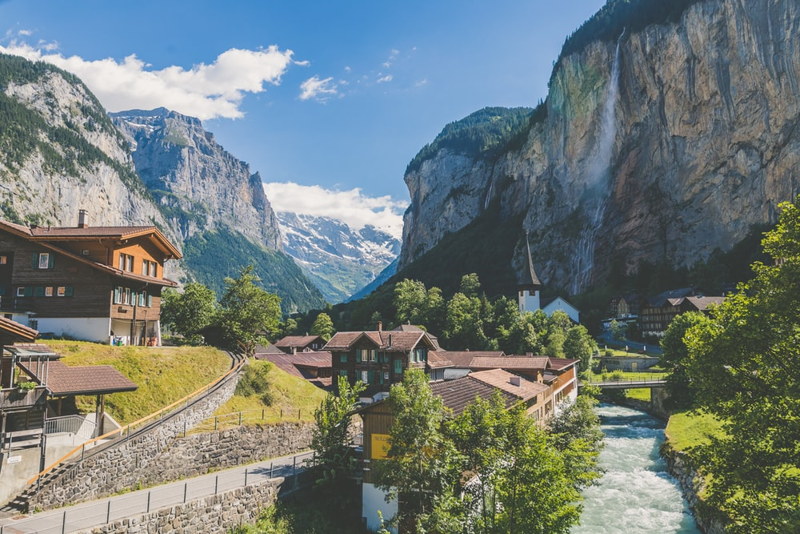

This is a little bit of a sum up of all the places in the world we have traveled thus far!
|
|
 |
| Iceland | Canada | Switzerland |
Of course we love all our vacations, but some are innevitably better than others and here is why
Iceland was magestic in every way, and it was unlike anything we have ever done before.
In every sense this trip was awesome, down to the breathtaking views and of course the fact that
we went with some of our closest friends was the the final cherry on top.

"The moraine lake was beautiful and we sat down did some kayaking. that day we saw the bear in the
in iceberg lake, we walked for 5hrs to see the iceberg lake" - Anubhav Venkatesan
.JPG)
Our most recent trip, and by far the nicest in terms of picture quality. This trip was interesting because
apparently one of the biggest heat waves in europe had hit us then, so as you can imagine, sweating in the swiss alps
was not what we were thinking was going to happen :) We persisted and saw amazing things that only europe could offer,
not to mention one of us jumping off a cliff!!